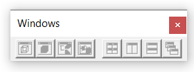
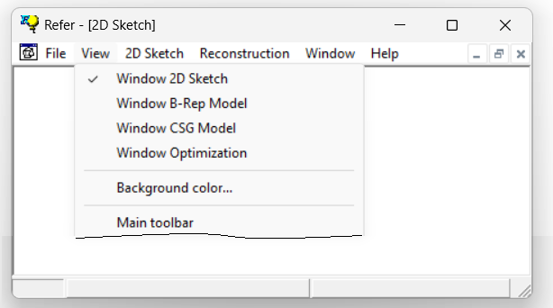
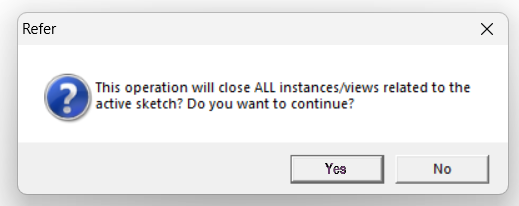

1.5.3 Windows
1.5.3.1 Child Windows
The different information processed by REFER is displayed in specific types of child windows (located within the parent window). These child windows are automatically activated and selected based on the current stage of the process and the type of information being displayed.
Child windows open automatically when needed. They can also be opened or closed through the windows toolbar, which includes four commands to automatically arrange the windows. Note that child windows are only available after a file is loaded, whether it is a new file or one that has been opened.

Alternatively, child windows can be controlled by clicking View in the Menu Bar:

Not all child windows can be freely opened or closed. Any attempt to close the 2D Sketch window will trigger a warning message, informing the user that the current document will also be closed:
